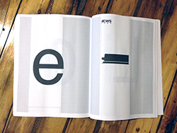
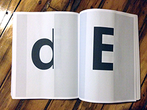
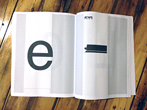
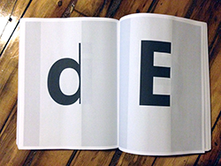

After working on This is Important I wanted to continue work that followed along the same guidelines. In that project I altered a website's CSS using the !important feature of CSS and found a page from the resulting PDF I wanted to print. Unlike that project, this project has no curation and prints the entire site out on letter sized paper. I chose the main page of Facebook after you log in because it is a site that is widely recognizable and is based on reading and images. To alter the site I added this to the CSS using Chrome's web inspector menu.
Those three changes made all the text black, the font size 1000px, and the letter spacing 1em and created an almost 1500 page book. That changed a single page website into an entirely new thing both in digital form which is show in the first several images and in the printed form which are all the other images.
###### Volume I, 740 pages & Volume II, 730 pages (8.5 in x 11 in), digitally printed by Lulu, RISD 2014


 


